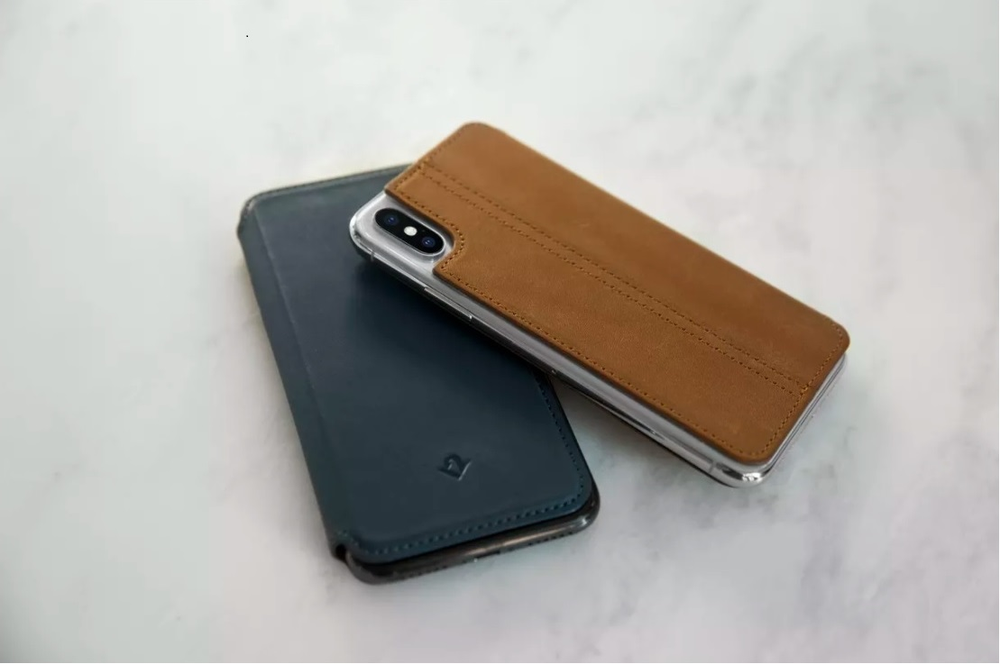

The SurfacePad is a sleek leather folio for the iPhone X 
Accessory manufacturer TwelveSouth has released a version of its SurfacePad case for the iPhone X. The SurfacePad is a folio style leather case that provides both front and back protection for the iPhone X, along with two card slots on the cover flap. Unlike other folio cases, the SurfacePad is thin and lightweight, though it won’t provide much protection from drops, as it doesn’t cover the top, bottom, or side of the phone. You can get it in black, brown, or blue for $49.99 direct from TwelveSouth.
I’ve been using the SurfacePad on my iPhone X for about a day, and while it’s better than other folio cases I’ve tested in the past, which were unusably bulky, it’s far from perfect. The leather is soft and supple and should patina well over time, but it has a strong chemical smell that hasn’t dissipated yet. The inner lining of the case is a soft, suede-like material, and the two card slots are loose enough to make it getting a card in and out of them easy, but not so loose that the card falls out on its own.The iPhone does not clip into the SurfacePad like with other folio cases, but instead the case adheres to the back of the phone. That leaves the right side and top and bottom exposed, so this is not the case to get if you want all around protection. The adhesive is reusable and doesn’t leave any marks on the back of the X, but this is not the kind of case that you want to take on and off very often, so it’s not good for people that switch cases often.
One thing I do like is the built-in kickstand function, which lets you prop the iPhone up for watching video on a table. The front cover will also automatically wake the iPhone when you open it, which wasn’t possible with the SurfacePad for other iPhone models. Wireless charging still works when the case is on the phone, as well.Overall, the SurfacePad is a stylish, attractive case for the iPhone X, and is far less bulky than other folio style cases if that’s the style you prefer. It’s also half the price of Apple’s official folio case for the iPhone X, which crucially doesn’t come in brown. But that comes at the cost of protection, so it’s more of a fashion statement than a complete phone protection plan.